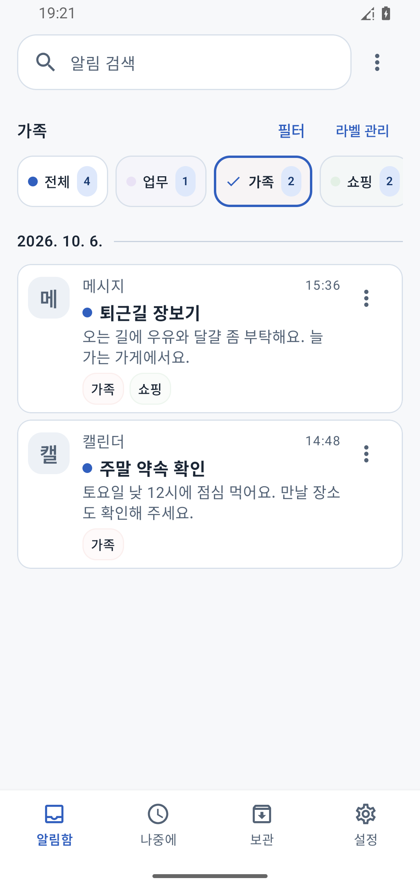
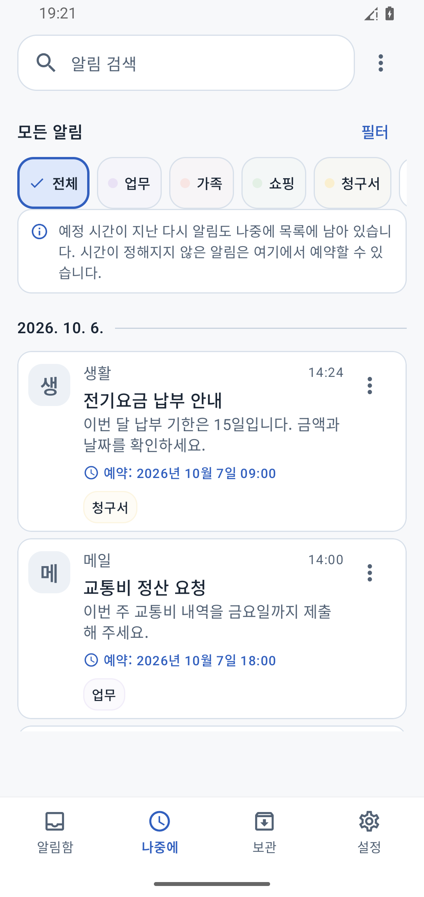
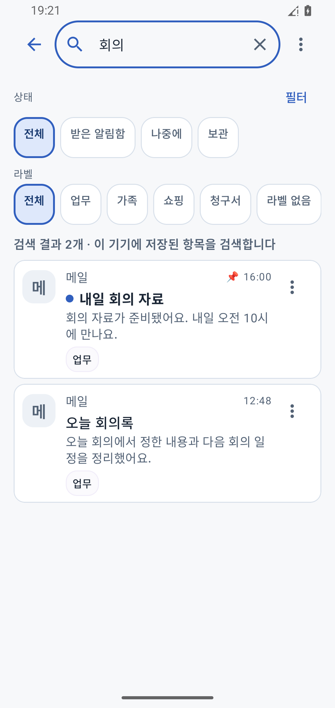
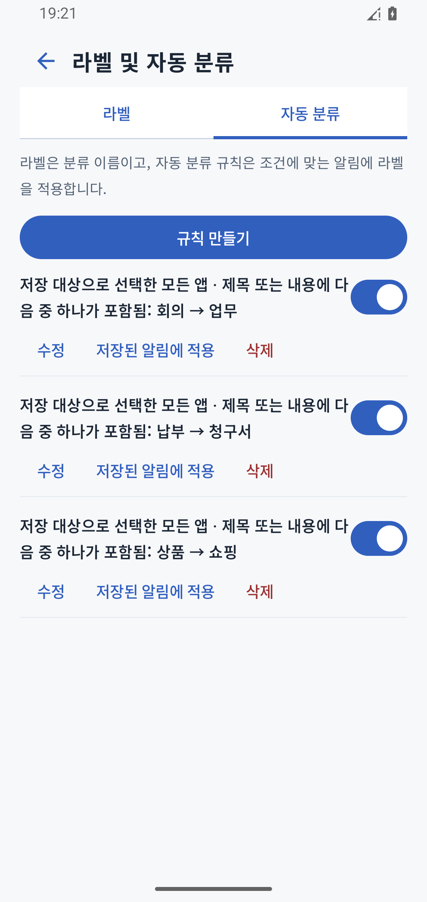

퇴근길에는,
가족의 부탁만 확인.
‘가족’ 라벨을 선택해,
장보기 부탁을 다시 확인하세요.

- 알림 도착
- 가족으로 필터
- 부탁 확인
언어
업무 연락도, 장보기 부탁도.
선택한 앱의 알림을 저장하고 라벨로 분류해, 편한 시간에 다시 확인하세요.
모든 기능 무료 · Android 12 이상
선택한 앱의 알림을 저장
라벨로 필요한 알림만 보기
나중에 확인하거나 검색으로 찾기
받은 알림을, 나에게 맞는 시간에 확인하고 활용하세요.
‘가족’ 라벨을 선택해,
장보기 부탁을 다시 확인하세요.

납부 안내를 ‘나중에’에 남기고,
다시 확인할 시간을 설정하세요.

화면 속 알림은 예시입니다. 다시 알림을 사용하려면 기능을 켜야 하며, 절전 설정 등 기기 제한으로 지연될 수 있습니다.
‘회의’ 같은 단어로 검색하세요.
제목·내용·메모에서 저장된 알림을 찾을 수 있어요.
앱·날짜·라벨로도 필터링할 수 있어요.

앱이나 키워드에 맞는 새 알림에 자동으로 라벨을 붙여요.

다음에 할 일을 알림에 메모하세요.
알림함을 정리하고, 나중에 검색하세요.

저장·검색·분류는 기기 안에서 이루어져요.
알림 내용·메모·라벨은 운영자의 서버로 전송하거나 저장하지 않습니다.
어떤 앱의 알림을 저장할지, 얼마나 보관할지 직접 정하세요.
저장 시작 후 가져올 수 있는 알림만 저장됩니다. 저장 전에 지운 알림은 복원할 수 없습니다.
저장을 시작한 뒤 가져와 저장한 알림은 Android 알림창에서 지운 후에도 다시 볼 수 있습니다. 저장 전에 지운 알림은 복원할 수 없습니다. 운영체제가 보호하는 일부 알림은 내용을 가져오지 못할 수 있습니다.
알림 내용·메모·라벨은 기기 안에서 관리하며 운영자의 서버로 전송하거나 저장하지 않습니다. 직접 기록을 내보내면 선택한 위치에 파일이 생성됩니다. 선택 사항인 열람 잠금으로 생체 인증이나 기기의 화면 잠금을 이용해 접근을 보호할 수도 있습니다. 열람 잠금은 저장된 데이터를 암호화하지 않습니다.
다시 확인할 날짜와 시간을 정하고 다시 알림을 켜면, 지정한 시간 이후에 알림으로 알려드립니다. 알림 표시 권한이 필요하며, 절전 설정 등 기기 제한으로 지연될 수 있습니다.
NotifyPost에서 알림을 읽거나 정리해도 원래 앱의 읽음 상태는 바뀌지 않습니다.
모든 기능을 무료로 사용할 수 있습니다. Android 12 이상에서 이용할 수 있습니다.
모든 기능 무료 · Android 12 이상